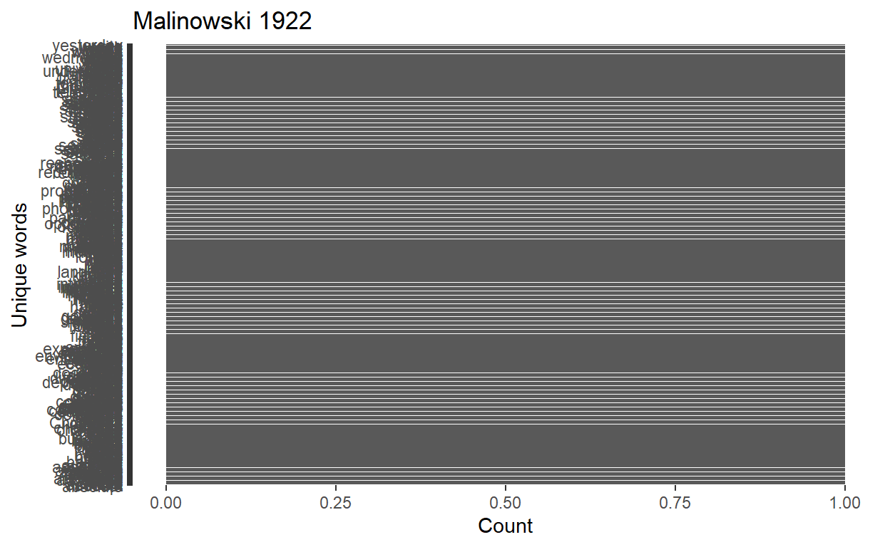
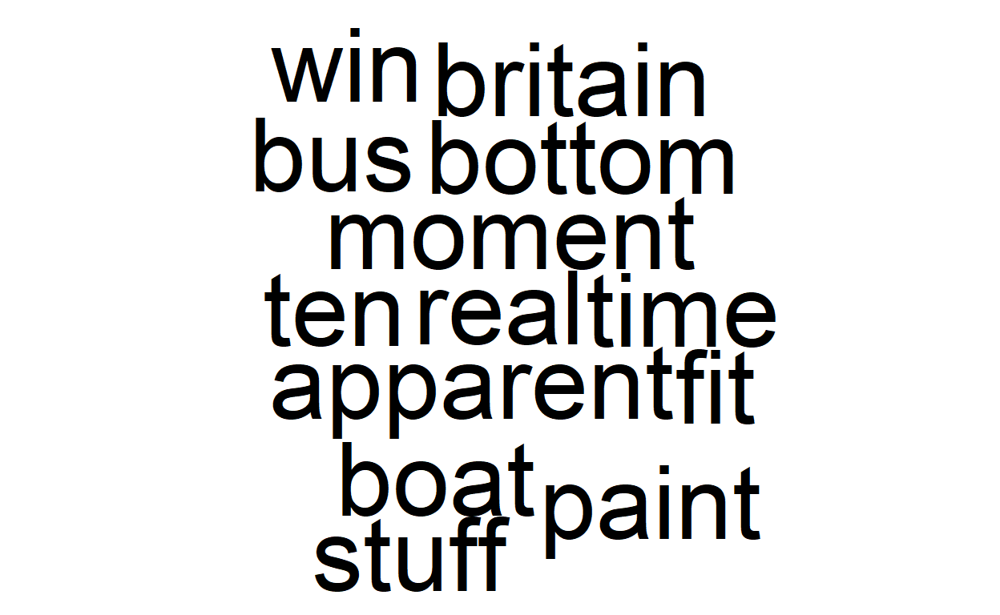
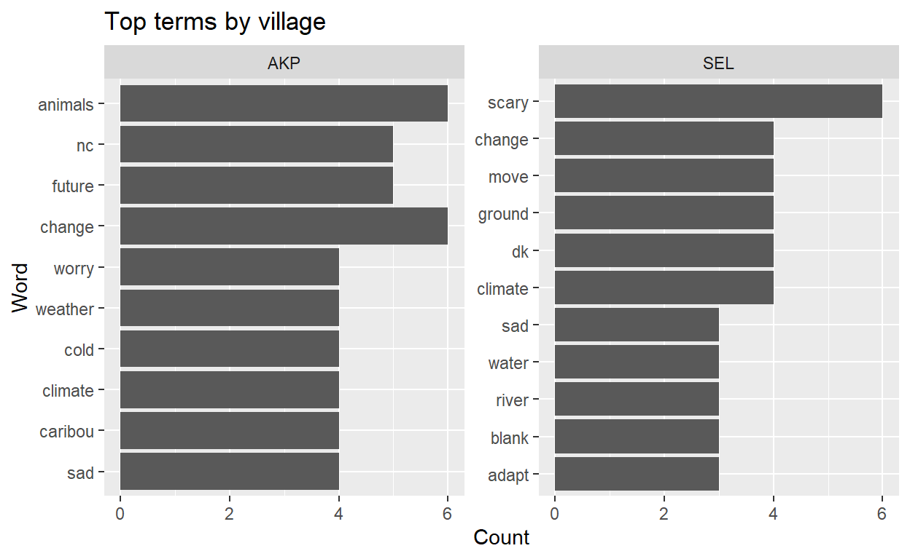
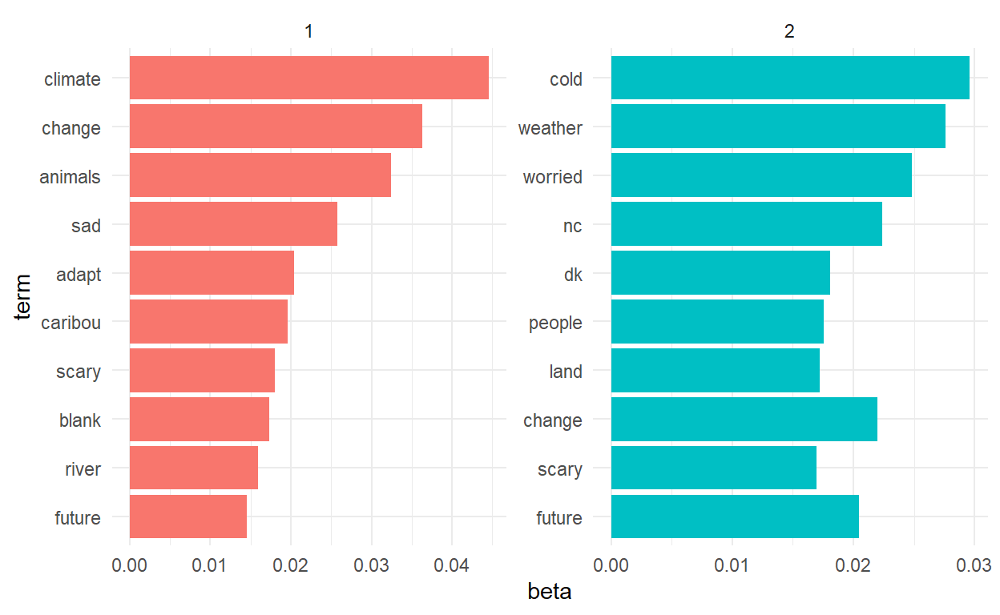

Text mining with R
In this tutorial, we will learn about how to work with text data in R. We will learn how to turn documents into word lists, analyze frequency counts, extract bigrams, analyze sentiment and parts of speech, and how to visualize text analyses.
Before we begin, here are some useful links:
To get started, we will analyze the classic Malinowski (1922) text Argonauts of the
Western Pacific. The text can be downloaded from Project
Gutenberg, or for simplicity, we can download the text directly using
the gutenbergr package.
First, we need to load all of the libraries we will be using today. Since this environment is more streamlined, we don’t need to install them here separately. But be careful to install and load them while working on your own computers.
# install.packages('gutenbergr')
library(gutenbergr)
# gutenberg_metadata
library(tidyverse)
library(wordcloud)
library(tidytext)
library(stringr)
library(topicmodels)
library(data.table)
library(textdata)
library(cleanNLP)
cnlp_init_udpipe()Download the Malinowski book text and examine the structure. How are the data organized?
malinowski1922 <- gutenberg_download(55822)
str(malinowski1922)
tibble [22,219 × 2] (S3: tbl_df/tbl/data.frame)
$ gutenberg_id: int [1:22219] 55822 55822 55822 55822 55822 55822 55822 55822 55822 55822 ...
$ text : chr [1:22219] " ARGONAUTS OF THE WESTERN PACIFIC" "" " An Account of Native" " Enterprise and Adventure" ...Analyzing individual word frequencies
One of the first ways we can explore a text is through looking at word frequncies. With multiple samples from different people or sites, comparing word frequencies can reveal differences across populations, while within a single text, word frequencies can highlight key issues, people, or places in a text.
Try it
Using the unnest_tokens() function, extract out the
individual words from Malinowski and create a table sorting the top
words by count. What do you notice about the top words? Why do you think
these words appear at the top of the list?
Stop words
Many of these top words are what we call stop words, or
those that add little to our analysis. These include words like
is, the and so, that add little to our
understanding of the overall topics or themes in a text.
Tidytext has a built in dictionary of stop words, making it
easy to quickly remove these words from the text.
# look at the words in the stop_words dataset
data("stop_words")
stop_words %>%
top_n(50)# remove stop words from the text
words <- as.data.frame.character(words)
colnames(words) <- "word"
malinowski1922tidy <- words %>%
anti_join(stop_words, by = c("word"))
# look at the structure
str(malinowski1922tidy)
'data.frame': 722 obs. of 1 variable:
$ word: chr "absolute" "accept" "account" "achieve" ...Now we can look at the number of unique words and their counts in Malinowski, without interference from stop words.
# how many unique words are there?
length(unique(malinowski1922tidy$word))
[1] 722
# make a table of the top words with stop words removed
malinowski1922tidy_wordcounts <- malinowski1922tidy %>%
count(word, sort = T)
## look at top 50 words
malinowski1922tidy %>%
count(word, sort = TRUE) %>%
top_n(50) %>%
mutate(word = reorder(word, n)) %>%
data.frame()Make a plot of these top words. What do you make of these new top words?
# plot top words from tokenized tweets
top50wordsplot <- malinowski1922tidy %>%
count(word, sort = TRUE) %>%
top_n(50) %>%
mutate(word = reorder(word, n)) %>%
ggplot(aes(x = word, y = n)) + geom_col() + xlab(NULL) + coord_flip() + labs(y = "Count",
x = "Unique words", title = "Malinowski 1922")
top50wordsplot
Wordclouds
Wordclouds are often avoided in scientific research due to their sometimes misleading arrangements and sizes of words. This can make them difficult to interpret. At the same time, word clouds can be useful in exploratory data analysis or applied research for quickly showing the main themes in a text, that can then be explored for further contextual information. Here we will make wordclouds of Malinowski’s text using two different methods.
malinowski1922tidy %>%
count(word) %>%
with(wordcloud(word, n, max.words = 100))
Another way to make wordclouds using the WordCloud2 package.
# install the package require(devtools) install_github('lchiffon/wordcloud2')
# load package
library(wordcloud2)
# make wordcloud. you may want to expand out the figure for the full effect
# while running separately wordcloud2(data = malinowski1922tidy_wordcounts)Analyzing pairs of words
We can also analyze pairs of words (bigrams). This can be useful for understanding the context around particular words as well as for identifying themes that are made up of multiple strings (e.g. “climate change”, “public health”).
bigrams <- malinowski1922 %>%
unnest_tokens(output = bigrams, input = text, token = "ngrams", n = 2)
str(bigrams)
tibble [197,633 × 2] (S3: tbl_df/tbl/data.frame)
$ gutenberg_id: int [1:197633] 55822 55822 55822 55822 55822 55822 55822 55822 55822 55822 ...
$ bigrams : chr [1:197633] "argonauts of" "of the" "the western" "western pacific" ...
## look at counts for each pair
bigrams %>%
count(bigrams, sort = TRUE) %>%
top_n(20)One challenge here is that again the stop words rise to the top of the frequencies. There are multiple ways we can handle this, but here we will remove any bigrams whre either the first or second word is a stop word.
# seperate words to pull out stop words
separated_words <- bigrams %>%
separate(bigrams, c("word1", "word2"), sep = " ")
# filter out stop words
malinowski_bigrams <- separated_words %>%
filter(!word1 %in% stop_words$word) %>%
filter(!word2 %in% stop_words$word)Try it
Try out these questions to test your own understanding!
- Make a table of the top 100 bigrams sorted from most to least frequent.
- Pull out all bigrams where “island” is the second term and make a table of the most common bigrams in this subset.
- Pull out all bigrams where “canoe” is either the first or second term and make a table of the most common bigrams in this subset.
Before moving forward, try to think what this analysis tells you about this text? Can you think of any data in your own research that would benefit from ngram analysis?
Sentiment analysis
Texts often contain certain emotions, feelings, or sentiments that can tell us more about what they mean. In a way, coding text data for sentiments is similar to the qualitative reseach method of coding fieldnotes for themes. Because of this, you can develop your own custom lexicon for your research context. However, because this is a popular methodology, many existing sentiment analysis dictionaries have been developed and publicly shared.
We’ll work with the NRC Emotion Lexicon. First, we can load the NRC lexicon and look at the different types of sentiments that it contains.
# load the nrc sentiment dictionary nrcdf <- get_sentiments('nrc') take a look
# at the top sentiments that occur in the lexicon nrcdf %>%
# count(sentiment,sort=T)Using inner_join() we can combine the sentiments with
the words from Malinowski, effectively “tagging” each word with a
particular sentiment.
# merge sentiments to malinowski data
malinowski1922_sentiment <- malinowski1922tidy %>%
inner_join(get_sentiments("nrc"))Try it
With the new merged and tagged dataframe, make a table of the top words in Malinowski that are associated with the sentiment “trust” and one other sentiment of choice. Reflect on how you might interpret these results. Do you find this information useful? Is there any place you could see sentiment analysis being useful in your own research?
Case study: Permafrost and climate change survey
Now that we’ve learned a bit about text analysis using Malinowski let’s test our skills on a real world dataset. Here we will use data from a survey in two Inupiaq villages in Alaska to examine how indiviuals in these communities feel about climate change and thawing permafrost. These data are drawn from here: William B. Bowden 2013. Perceptions and implications of thawing permafrost and climate change in two Inupiaq villages of arctic Alaska Link. Let’s further examine the responses to two open ended questions: (Q5) What is causing it [permafrost around X village] to change? and (Q69) “What feelings do you have when thinking about the possibility of future climate change in and around [village name]?”.
First we load the data and subset out the columns of interest.
# we will work with the permafrost survey data.
surv <- read.csv("https://maddiebrown.github.io/ANTH630/data/Survey_AKP-SEL.csv",
stringsAsFactors = F)
surv_subset <- surv %>%
select(Village, Survey.Respondent, Age.Group, X69..Feelings, X5..PF.Cause.)Then we can quickly calculate the most frequent terms across all 80 responses.
class(surv$X69..Feelings) #make sure your column is a character variable
[1] "character"
surv_tidy <- surv_subset %>%
unnest_tokens(word, X69..Feelings) %>%
anti_join(stop_words)
# what are most common words?
feelingswordcount <- surv_tidy %>%
count(word, sort = T)Try it
Make wordclouds of the word frequency in responses about feelings related to climate change using two different methods.
surv_tidy %>%
count(word) %>%
with(wordcloud(word, n, max.words = 100))
wordcloud2(data = feelingswordcount)Comparing word frequency across samples
Are there noticeable differences in responses across individuals from different sites? We can compare the responses about “What feelings do you have when thinking about the possibility of future climate change in and around [village name]?” from the permafrost survey, based on which village the respondent lives in.
# word frequency by village
surv_tidy <- surv_subset %>%
unnest_tokens(word, X69..Feelings) %>%
anti_join(stop_words)
# what are most common words?
surv_tidy %>%
count(word, sort = T) %>%
top_n(20)
# we can also look at the top words
byvillage <- surv_tidy %>%
count(Village, word, sort = T) %>%
ungroup()
byvillage %>%
top_n(20)
top_10 <- byvillage %>%
group_by(Village) %>%
top_n(10, n) %>%
ungroup() %>%
arrange(Village, desc(n))
ggplot(top_10, aes(x = reorder(word, n), y = n)) + geom_bar(stat = "identity") +
coord_flip() + ggtitle("Top terms by village") + labs(x = "Word", y = "Count") +
facet_wrap(~Village, scales = "free_y")
Topic Modeling
In addition to analyzing word and bigram frequencies, we can also analyze texts using topic modeling. Topic modeling allows us to identify themes in the text without needing to clearly know which themes or groupings we expect to emerge. This can be very useful when you have large columes of messy data or data from multiple diverse sources that you need to parse. We will use Latent Dirichlet allocation or (LDA), following the explanation in Text Mining with R.
Before we can identify themes across responses however, we need to make sure each “document” or “response” has a unique identifier.
Try it
Think about it! What is the primary key or unique identifier for this dataset? How do you know? Why can’t you use Survey.Respondent as a unique identifier?
Make a new primary key called “ID” that has a different value for each unique response.
surv_subset %>%
select(Village, Survey.Respondent)
surv_subset <- surv_subset %>%
mutate(ID = paste(Village, Survey.Respondent, sep = "_"))Frequency of word pairs per response
In this section we will look at frequency of different word pairs/bigrams per response, in our dataset. The additional comments with the code are intented to help you understand the functions of the syntax we are using.
# look at the bigrams in these responses.
surv_subset %>%
unnest_tokens(output = bigrams, input = X69..Feelings, token = "ngrams", n = 2) %>%
count(bigrams, sort = T) %>%
top_n(20)
# look at pairwise counts per responses. How often do two words show up
# together in one person's response?
library(widyr)
surv_tidy %>%
pairwise_count(word, Survey.Respondent, sort = T)# so we see that 'change' and 'cold' appear in three responses, as do climate
# and change. however, we previously learned that the Survey.Respondent column
# is not a unique identifier for the responses. Let's run the same code, but
# with the new ID column we created.
### let's make a new surv_tidy object that incorporates the new ID we made
surv_subset <- surv_subset %>%
mutate(ID = paste(Village, Survey.Respondent, sep = "_"))
surv_tidy <- surv_subset %>%
unnest_tokens(word, X69..Feelings) %>%
anti_join(stop_words)
surv_tidy %>%
pairwise_count(word, ID, sort = T) %>%
top_n(20)# in this case the output is nearly the same, but in other cases this
# distinction can make a significant difference.The first step in creating a topic model is to count the number of
times each word appears in each individual document (or response in our
case). Luckily, we can count by two variables using the
count() function. Let’s create a new
byresponse variable.
byresponse <- surv_tidy %>%
count(ID, word, sort = T) %>%
ungroup()
# check how many responses are included in the analysis. this allows you to
# double check that the new unique identifier we made worked as expected.
unique(byresponse$ID)
[1] "AKP_26" "AKP_1" "AKP_17" "AKP_18" "AKP_3" "AKP_32" "AKP_5" "SEL_21"
[9] "AKP_10" "AKP_11" "AKP_12" "AKP_13" "AKP_14" "AKP_15" "AKP_16" "AKP_19"
[17] "AKP_2" "AKP_20" "AKP_22" "AKP_23" "AKP_24" "AKP_25" "AKP_27" "AKP_28"
[25] "AKP_29" "AKP_30" "AKP_31" "AKP_33" "AKP_34" "AKP_35" "AKP_36" "AKP_37"
[33] "AKP_38" "AKP_4" "AKP_6" "AKP_7" "AKP_8" "AKP_9" "SEL_1" "SEL_10"
[41] "SEL_11" "SEL_13" "SEL_14" "SEL_15" "SEL_17" "SEL_18" "SEL_19" "SEL_2"
[49] "SEL_20" "SEL_22" "SEL_24" "SEL_25" "SEL_26" "SEL_27" "SEL_29" "SEL_3"
[57] "SEL_30" "SEL_31" "SEL_32" "SEL_33" "SEL_34" "SEL_35" "SEL_36" "SEL_37"
[65] "SEL_38" "SEL_39" "SEL_4" "SEL_40" "SEL_5" "SEL_6" "SEL_7" "SEL_8"
[73] "SEL_9"
length(unique(byresponse$ID))
[1] 73Now we can convert our longform word list into a document-term matrix. Read more here
surv_dtm <- byresponse %>%
cast_dtm(ID, word, n)
# ?cast_dtm #read up on how this function worksRun the LDA() function and choose a number of solutions. In this case, let’s try it with 2.
surv_lda <- LDA(surv_dtm, k = 2, control = list(seed = 9999))
# look at our output
str(surv_lda)
Formal class 'LDA_VEM' [package "topicmodels"] with 14 slots
..@ alpha : num 35.6
..@ call : language LDA(x = surv_dtm, k = 2, control = list(seed = 9999))
..@ Dim : int [1:2] 73 210
..@ control :Formal class 'LDA_VEMcontrol' [package "topicmodels"] with 13 slots
.. .. ..@ estimate.alpha: logi TRUE
.. .. ..@ alpha : num 25
.. .. ..@ seed : int 9999
.. .. ..@ verbose : int 0
.. .. ..@ prefix : chr "C:\\Users\\USERPC~1\\AppData\\Local\\Temp\\RtmpANm4lz\\file1d8c21c66e7f"
.. .. ..@ save : int 0
.. .. ..@ nstart : int 1
.. .. ..@ best : logi TRUE
.. .. ..@ keep : int 0
.. .. ..@ estimate.beta : logi TRUE
.. .. ..@ var :Formal class 'OPTcontrol' [package "topicmodels"] with 2 slots
.. .. .. .. ..@ iter.max: int 500
.. .. .. .. ..@ tol : num 1e-06
.. .. ..@ em :Formal class 'OPTcontrol' [package "topicmodels"] with 2 slots
.. .. .. .. ..@ iter.max: int 1000
.. .. .. .. ..@ tol : num 1e-04
.. .. ..@ initialize : chr "random"
..@ k : int 2
..@ terms : chr [1:210] "days" "cold" "april" "march" ...
..@ documents : chr [1:73] "AKP_26" "AKP_1" "AKP_17" "AKP_18" ...
..@ beta : num [1:2, 1:210] -4.73 -4.75 -5.22 -3.52 -4.58 ...
..@ gamma : num [1:73, 1:2] 0.505 0.491 0.476 0.498 0.516 ...
..@ wordassignments:List of 5
.. ..$ i : int [1:330] 1 1 1 1 1 1 1 1 1 1 ...
.. ..$ j : int [1:330] 1 11 31 32 48 50 62 63 64 65 ...
.. ..$ v : num [1:330] 1 1 1 1 2 2 2 1 1 2 ...
.. ..$ nrow: int 73
.. ..$ ncol: int 210
.. ..- attr(*, "class")= chr "simple_triplet_matrix"
..@ loglikelihood : num [1:73] -64.3 -41.4 -66.3 -50.1 -49.8 ...
..@ iter : int 8
..@ logLiks : num(0)
..@ n : int 343
# examine the probability that each word is in a particular topic group
surv_topics <- tidy(surv_lda, matrix = "beta")
surv_topicsExamine the top words for each topic identified by the model.
top_words <- surv_topics %>%
group_by(topic) %>%
top_n(10, beta) %>%
ungroup() %>%
arrange(topic, desc(beta))
top_wordsWe can also examine the results graphically.
# plot these top words for each topic (adapted from
# https://www.tidytextmining.com/topicmodeling.html)
top_words %>%
group_by(topic) %>%
mutate(term = fct_reorder(term, beta)) %>%
ungroup() %>%
ggplot(aes(beta, term, fill = factor(topic))) + geom_col(show.legend = FALSE) +
facet_wrap(~topic, scales = "free") + theme_minimal()
Try it
Repeat the topic modeling analysis but using 6 topics instead of two. Try by yourself first.
Hint :What change should be there in the previous code when the number of topics is changing from 2 to 4? Think about the parameter we used to denote the number of topics inside LDA().
In this case, our sample is small, so topic modeling is not necessarily the best method to use. However, even from this small sample, you can see that some topics emerge from the text that were not previously apparent.
Manual text wrangling
Sometimes you’ll need to edit text or strings manually. For example, you may find that for your research question, you are less interested in differentiating between the terms running, run, and runner, than in identifying clusters of beliefs about running as a more general concept. On the other hand, you might want to differentiate between runners and running as beliefs about groups of people vs. the act of running. How you choose to transform text data in your research is up to your research questions and understanding of the cultural context.
R has a number of helpful functions for manually adjusting strings. We’ll cover a few to get you started. Let’s go back to the permafrost and climate change survey and look at responses to: (Q5) What is causing it [permafrost around X village] to change?.
First let’s look at the raw data. What are some potential issues in the strings below that might make text analysis difficult or ineffective?
surv$X5..PF.Cause.[10:30]
[1] "climate change"
[2] "too warm"
[3] "warmer weather, shorter winters, lack of snow, fast springs. [will affect AKP because we] use Argos to go out."
[4] "weather warming"
[5] "temperature"
[6] "heat. A lot of heat."
[7] "melting of the ground - goes down"
[8] "spirited answer. Her parents told of last people of culture to disappear - then weather and all surrounding began birthing pains for catastrophy"
[9] "probably global warming"
[10] "temperature outside is not steady"
[11] "(blank)"
[12] "N/A"
[13] "most likely war weather or global warming"
[14] "not much winter - hardly get snow. Always wind blown. Summer be rain, rain, rain. Late snow."
[15] "warmer winters"
[16] "global warming"
[17] "warming weather, longer summer/fall season"
[18] "I have no idea"
[19] "warmer climate"
[20] "Seems like there's lots of rain & water causes ground to thaw. So maybe accumulated water? Maybe warm weather?"
[21] "the heat wave - winter frosts" Luckily we can manually adjust the strings to make them easier to analyze systematically. For example we might set characters to lowercase, trim whitespace and remove any empty or missing rows.
# make a new column to hold the tidy data
surv$cause_tidy <- surv$X5..PF.Cause.
# make lower case
surv$cause_tidy <- tolower(surv$cause_tidy)
# remove white space at beginning and end of string
surv$cause_tidy <- trimws(surv$cause_tidy)
# filter out blank or empty rows
surv <- surv %>%
filter(surv$cause_tidy != "")
surv <- surv %>%
filter(surv$cause_tidy != "(blank)")
surv <- surv %>%
filter(surv$cause_tidy != "n/a")We can also directly replace particular strings. Here we change some strings with typos.
surv$cause_tidy <- surv$cause_tidy %>%
str_replace("wamer", "warmer")
surv$cause_tidy <- surv$cause_tidy %>%
str_replace("lnoger", "longer")Another common string data transformation involves grouping together
responses into more standardized categories. You can transform cll
values individually or based on exact string matches. In addition, using
%like% we can transform any strings where just part of the
string contains a particular string. For example, we might decide that
any time the string “warm” appears in a response, the overall theme of
the response is associated with “global warming”. Or based on our
ethnographic understanding of the context we might know that “seasonal
changes” are important causes of permafrost in local cultural models. We
can then look for some key terms that will allow us to rapidly change
multiple responses that are likely to fit in this category. In this
case, “late” and “early”.
# group some responses together based on the presence of a particular string
surv <- surv %>%
mutate(cause_tidy = replace(cause_tidy, cause_tidy %like% "warm", "global warming"))
surv$cause_tidy[1:30]
[1] "environment"
[2] "exhaust"
[3] "global warming"
[4] "global warming"
[5] "hot summers, early springs. in super cold winters the ground comes up & cracks and water comes out."
[6] "global warming"
[7] "climate change"
[8] "freezing & thawing in fall & spring"
[9] "global warming"
[10] "climate change"
[11] "global warming"
[12] "global warming"
[13] "global warming"
[14] "temperature"
[15] "heat. a lot of heat."
[16] "melting of the ground - goes down"
[17] "spirited answer. her parents told of last people of culture to disappear - then weather and all surrounding began birthing pains for catastrophy"
[18] "global warming"
[19] "temperature outside is not steady"
[20] "global warming"
[21] "not much winter - hardly get snow. always wind blown. summer be rain, rain, rain. late snow."
[22] "global warming"
[23] "global warming"
[24] "global warming"
[25] "i have no idea"
[26] "global warming"
[27] "global warming"
[28] "the heat wave - winter frosts"
[29] "global warming"
[30] "global warming"
surv <- surv %>%
mutate(cause_tidy = replace(cause_tidy, cause_tidy %like% "early" | cause_tidy %like%
"late", "seasonal changes"))
surv$cause_tidy[1:30]
[1] "environment"
[2] "exhaust"
[3] "global warming"
[4] "global warming"
[5] "seasonal changes"
[6] "global warming"
[7] "climate change"
[8] "freezing & thawing in fall & spring"
[9] "global warming"
[10] "climate change"
[11] "global warming"
[12] "global warming"
[13] "global warming"
[14] "temperature"
[15] "heat. a lot of heat."
[16] "melting of the ground - goes down"
[17] "spirited answer. her parents told of last people of culture to disappear - then weather and all surrounding began birthing pains for catastrophy"
[18] "global warming"
[19] "temperature outside is not steady"
[20] "global warming"
[21] "seasonal changes"
[22] "global warming"
[23] "global warming"
[24] "global warming"
[25] "i have no idea"
[26] "global warming"
[27] "global warming"
[28] "the heat wave - winter frosts"
[29] "global warming"
[30] "global warming"
# compare the original with your categorizations surv %>%
# select(X5..PF.Cause.,cause_tidy)We won’t get into too much detail today, but you can also search and
select string data using regular
expressions. You can read more in R4DS.
Here let’s use str_detect() to pull out some strings with
regular expressions.
# any responses ending in 'ing'
surv$cause_tidy[str_detect(surv$cause_tidy, "ing$")]
[1] "global warming" "global warming"
[3] "global warming" "freezing & thawing in fall & spring"
[5] "global warming" "global warming"
[7] "global warming" "global warming"
[9] "global warming" "global warming"
[11] "global warming" "global warming"
[13] "global warming" "global warming"
[15] "global warming" "global warming"
[17] "global warming" "global warming"
[19] "global warming" "global warming"
[21] "global warming" "global warming"
[23] "global warming" "global warming"
[25] "global warming" "global warming"
[27] "global warming" "global warming"
[29] "global warming" "global warming"
[31] "global warming" "global warming"
[33] "global warming" "global warming"
[35] "global warming"
# any reponses that contain a W followed by either an 'e' or an 'a'
surv$cause_tidy[str_detect(surv$cause_tidy, "w[ea]")]
[1] "global warming"
[2] "global warming"
[3] "global warming"
[4] "global warming"
[5] "global warming"
[6] "global warming"
[7] "global warming"
[8] "spirited answer. her parents told of last people of culture to disappear - then weather and all surrounding began birthing pains for catastrophy"
[9] "global warming"
[10] "global warming"
[11] "global warming"
[12] "global warming"
[13] "global warming"
[14] "global warming"
[15] "global warming"
[16] "the heat wave - winter frosts"
[17] "global warming"
[18] "global warming"
[19] "weather"
[20] "global warming"
[21] "global warming"
[22] "global warming"
[23] "global warming"
[24] "global warming"
[25] "weather."
[26] "global warming"
[27] "global warming"
[28] "global warming"
[29] "global warming"
[30] "global warming"
[31] "global warming"
[32] "global warming"
[33] "global warming"
[34] "global warming"
[35] "global warming"
[36] "global warming"
[37] "global warming"
[38] "global warming"
# any responses that contain the string erosion
surv$cause_tidy[str_detect(surv$cause_tidy, "erosion")]
[1] "erosion, and real hot summers and a lot of snow & rain."
[2] "mud goes down river, cracking all along & falling in - erosion"
[3] "ground erosion"
[4] "erosion"
# any responses that contain the string erosion, but which have any character
# occurring before the word erosion.
surv$cause_tidy[str_detect(surv$cause_tidy, ".erosion")]
[1] "mud goes down river, cracking all along & falling in - erosion"
[2] "ground erosion" The utility of regular expressions is huge for quickly searching through and transforming large volumes of string data. We’ve only scratched the surface today.
Whenever transforming large volumes of data using string detection and regular expressions it is critical to double check that each operation is in fact working as you expected it to. Paying attention to the order of transformations is also important for preventing you from overwriting previous data transformations.
Creating new variables with str_detect()
Sometimes it is useful to create flags or indicator variables in your data. These can allow you to quickly filter out rows that have particular characteristics. For example, we can create a new binary column that indicates whether or not the response refers to global warming. This variable can then be used for further grouping, data visualization or other tasks.
surv <- surv %>%
mutate(GlobalWarmingYN = str_detect(cause_tidy, "global warming"))
table(surv$GlobalWarmingYN) # how many responses contain the string global warming?
FALSE TRUE
37 34 Parts of speech tagging
We can also tag the parts of speech in a text. This allows us to focus an analysis on verbs, nouns, or other parts of speech that may be of interest. For example, in a study on sentiments, we might want to pull out adjectives in order to understand how people feel or describe a particular phenomenon. On the other hand, we might also pull out verbs in order to understand the types of actions people describe as associated with certain cultural practices or beliefs. Let’s tag the parts of speech in Malinowski 1922 to learn more about the places and cultural practices documented in this book.
Try it
Using the cnlp_annotate() function we can tag the parts
of speech in Malinowski 1922. This function can take a long time to run.
This is the last thing we will do today, so feel free to let it run and
then take a break and come back to finish these problems. Try by
yourself first. Look for solutions only if needed.
Make a new object using only the token part of the output from
cnlp_annotate()and then examine the$uposcolumn. What are all the unique parts of speech in this dataset?Select and examine the top 30 nouns and verbs in this dataset. Do any of the terms surprise you? How might this level of analysis of the text be meaningful for your interpretation of its themes?
Click for solution
library(cleanNLP)
cnlp_init_udpipe()
# tag parts of speech. takes a long time
malinowksiannotatedtext <- cnlp_annotate(malinowski1922tidy$word)
str(malinowksiannotatedtext) # look at the structure. because it is a list we have to pull out that particular section of the list
malinowskiannotatedtextfull <- data.frame(malinowksiannotatedtext$token)
str(malinowskiannotatedtextfull)
# what are all the different parts of speech that have been tagged?
unique(malinowskiannotatedtextfull$upos)
# verb analysis. first look at some of the verbs that occur in the book
# malinowskiannotatedtextfull %>% filter(upos=='VERB') %>% select(token,lemma)
# %>% data.frame() %>% top_n(30) top 50 verbs
malinowskiannotatedtextfull %>%
filter(upos == "VERB") %>%
count(token, sort = T) %>%
top_n(30)
# what are the top 50 nouns?
malinowskiannotatedtextfull %>%
filter(upos == "NOUN") %>%
count(lemma, sort = T) %>%
top_n(30) %>%
data.frame()